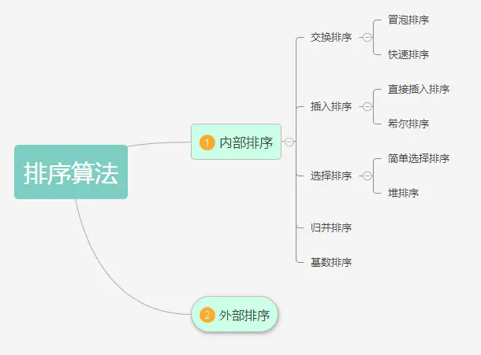
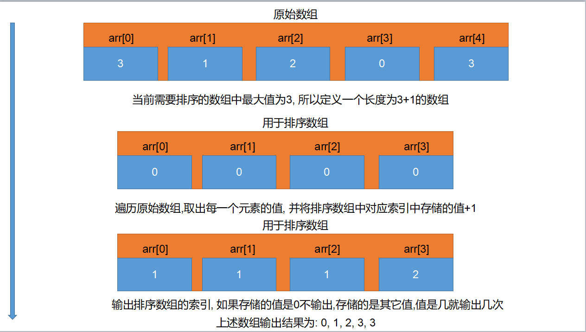

插，冒，选，希，快，堆，并，基；
插冒 (稳定) 选希快堆 (不稳定) 并基 (稳定)

- 稳定性
归并排序、冒泡排序、插入排序、基数排序是稳定的
选择排序、快速排序、希尔排序、堆排序是不稳定的
- 时间复杂度
最基础的四个算法：冒泡、选择、插入、快排中，快排的时间复杂度最小 O (n*log2n)，其他都是 O（n2）
| 排序法 | 平均时间 | 最差情形 | 稳定度 | 额外空间 | 备注 |
| :..... |:..... |:..... |:..... |:..... |:..... |
| 冒泡 | O (n2) | O (n2) | 稳定 | O (1) | n 小时较好 |
| 选择 | O (n2) | O (n2) | 不稳定 | O (1) | n 小时较好 |
| 插入 | O (n2) | O (n2) | 稳定 | O (1) | 大部分已排序时较好 |
| 基数 | O (logRB) | O (logRB) | 稳定 | O (n) | B 是真数 (0-9),R 是基数 (个十百) |
| Shell | O (nlogn) | O (ns) 1<s<2 | 不稳定 O (1) | s 是所选分组 |
| 快速 | O (nlogn) | O (n2) | 不稳定 | O (nlogn) | n 大时较好 |
| 归并 | O (nlogn) | O (nlogn) | 稳定 | O (1) | n 大时较好 |
| 堆 | O (nlogn) | O (nlogn) | 不稳定 | O (1) | n 大时较好 |
# 计数排序（Counting Sort）
计数排序是一个非基于比较的排序算法，该算法于 1954 年由 Harold H. Seward 提出。它的优势在于在 对一定范围内的整数排序 时，快于任何比较排序算法
# 排序思路:
- 1. 找出待排序数组最大值
- 2. 定义一个索引最大值为待排序数组最大值的数组
- 3. 遍历待排序数组，将待排序数组遍历到的值作新数组索引
- 4. 在新数组对应索引存储值原有基础上 + 1

# 简单代码实现
#include<stdio.h> | |
int main() | |
{ | |
// 待排序数组 | |
int num[7] = {3, 1, 16, 9, 1, 0, 9}; | |
// 用于排序数组 | |
int newNums[17] = {0}; | |
// 计算待排序数组长度 | |
int len = sizeof(num) / sizeof(num[0]); | |
// 编列待排序数组 | |
for (int i = 0; i < len; i++) | |
{ | |
// 去除待排序数组当前值 | |
int index = num[i]; | |
// 将待排序数组当前值作为排序数组索引 | |
// 将用于排序数组对应索引原有值 + 1 | |
newNums[index] = newNums[index] + 1; | |
} | |
// 计算排序数组长度 | |
int len2 = sizeof(newNums) / sizeof(newNums[0]); | |
// 输出排序数组索引， 就是排序之后的结果 | |
for (int i = 0; i < len2; i++) | |
{ | |
// 只有所在索引值大于 0，说明此索引值是原待排序数组中的值，可以输出. | |
for (int j = 0; j < newNums[i]; j++) | |
{ | |
printf("%i\n", i); | |
} | |
} | |
return 0; | |
} |
# 选择排序
选择排序 (Selection sort) 是一种简单直观的排序算法。它的工作原理如下。首先在未排序序列中找到最小元素，存放到排序序列的起始位置，然后，再从剩余未排序元素中继续寻找最小元素，然后放到排序序列末尾。以此类推，直到所有元素均排序完毕.

# 排序思路
- 假设按照升序排序
- 1. 用第 0 个元素和后面所有元素依次比较
- 2. 判断第 0 个元素是否大于当前被比较元素，一旦小于就交换位置
- 3. 第 0 个元素和后续所有元素比较完成后，第 0 个元素就是最小值
- 4. 排除第 0 个元素，用第 1 个元素重复 1~3 操作，比较完成后第 1 个元素就是倒数第二小的值
- 以此类推，直到当前元素没有可比较的元素，排序完成
# 代码实现
#include<stdio.h> | |
// 指针 (地址) 传递 | |
void swapElement(int* m, int* n) | |
{ | |
int tmp = *m; | |
*m = *n; | |
*n = tmp; | |
} | |
int main() | |
{ | |
// 待排序数组 | |
int num[7] = {3, 1, 16, 9, 1, 0, 9}; | |
int len = sizeof(num) / sizeof(num[0]); | |
for (int i = 0; i < len - 1; i++) | |
{ | |
for (int j = i + 1; j < len; j++) | |
{ | |
if (num[i] > num[j]) | |
{ | |
swapElement(&num[i], &num[j]); | |
} | |
} | |
} | |
for (int i = 0; i < len; i++) | |
{ | |
printf("%i\n", num[i]); | |
} | |
return 0; | |
} |
# 冒泡排序
冒泡排序 (Bubble Sort) 是一种简单的排序算法。它重复 地走访过要排序的数列，一次比较两个元素，如果他们的顺序错误就把他们交换过来。走访数列的工作是重复地进行直到没有再需要交换，也就是说该数列已经排序完成。这个算法的名字由来是因为越小的元素会经由交换慢慢 “浮” 到数列的顶端.

# 排序思路:
- 假设按照升序排序
- 1. 从第 0 个元素开始，每次都用相邻两个元素进行比较
- 2. 一旦发现后面一个元素小于前面一个元素就交换位置
- 3. 经过一轮比较之后最后一个元素就是最大值
- 4. 排除最后一个元素，以此类推，每次比较完成之后最大值都会出现再被比较所有元素的最后
- 直到当前元素没有可比较的元素，排序完成
# 代码实现
#include<stdio.h> | |
void swapElement(int* m, int* n) | |
{ | |
int tmp = *m; | |
*m = *n; | |
*n = tmp; | |
} | |
int main() | |
{ | |
// 待排序数组 | |
int num[7] = {3, 1, 16, 9, 1, 0, 9}; | |
int len = sizeof(num) / sizeof(num[0]); | |
for (int i = 0; i < len; i++) | |
{ | |
for (int j = 0; j < len - i - 1; j++) | |
{ | |
if (num[j] > num[j + 1]) | |
{ | |
swapElement(&num[j], &num[j + 1]); | |
} | |
} | |
} | |
for (int i = 0; i < len; i++) | |
{ | |
printf("%i\n", num[i]); | |
} | |
return 0; | |
} |